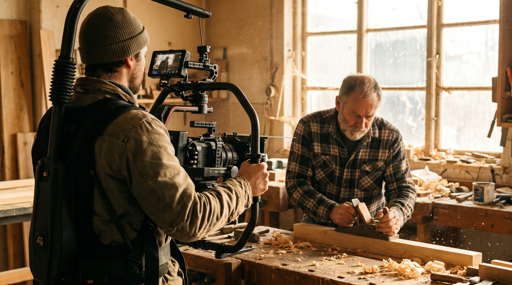
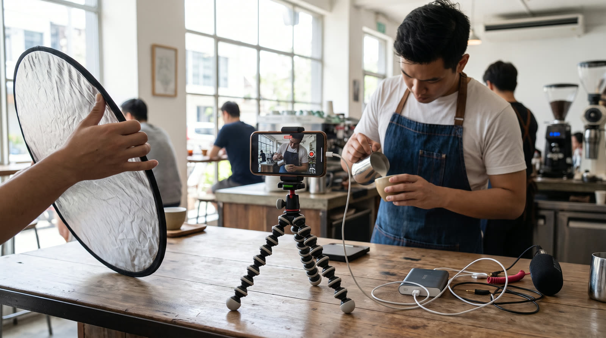
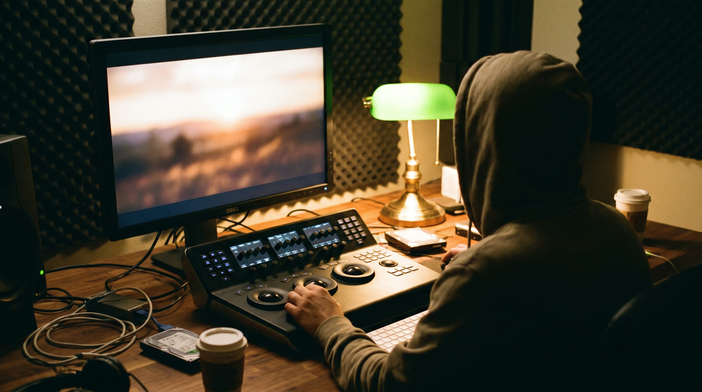
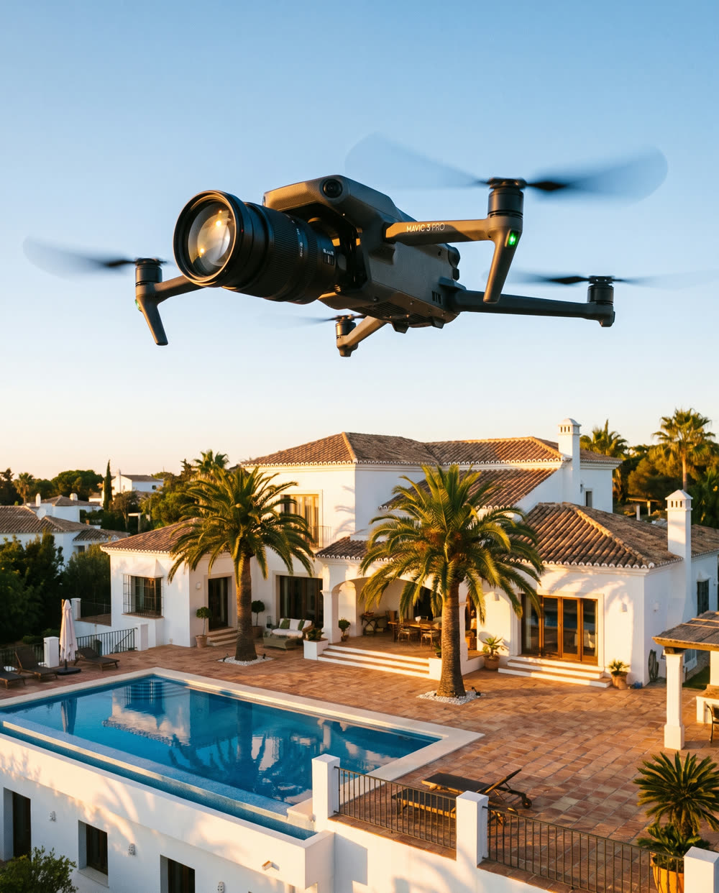

Home · Drone & Video · Bedrijfsfilm
Een film die laat zien wie je bent en hoe je werkt. We filmen op jouw locatie, monteren de film zelf en leveren hem klaar voor je website en social media. Een shoot kost €250, met drone-opnames €300.
Kort antwoord
Je vertelt ons in een kort gesprek wat de film moet doen en waar hij komt te staan. Daarna filmen we in één dagdeel op jouw locatie in Den Bosch of elders in Nederland, monteren we de film met kleurcorrectie en muziek en krijg je hem binnen één tot twee weken. Een shoot kost €250, met drone €300. Geen opnamedag nodig? Dan maken we een bedrijfsvideo van je eigen foto's voor €119.

Voor wie
Voor bedrijven waarvan het werk zich lastig in woorden laat uitleggen, maar wel goed laat zien.
Een film op je homepage laat je werkplaats, je mensen en je manier van werken zien, nog voordat iemand belt. Zo weet een nieuwe klant al een beetje wie je bent.
Wat je krijgt
Vaste prijzen als startpunt; voor een grotere productie krijg je vooraf een offerte. Waar de prijs van een film verder van afhangt, lees je in wat een bedrijfsfilm kost. Alle tarieven staan op onze prijzenpagina.

Opname met professionele apparatuur, montage en kleurcorrectie. Je krijgt een kant-en-klare film, geen losse ruwe beelden.
Dezelfde shoot met luchtopnames erbij, voor het overzicht van je pand, terrein of project.
Een korte film voor je website, Google-bedrijfsprofiel en Instagram, gemaakt van foto's die je al hebt. Zonder opnamedag.
Met het Aurora-abonnement krijg je elke maand 2 bedrijfsvideo's en 8 foto's in je huisstijl, klaar om te posten.
Een uitgebreide bedrijfsfilm met meerdere locaties of draaidagen offreren we op maat.

Hoe wij het aanpakken
Omdat we ook websites bouwen, denken we vanaf het begin mee over waar je film komt te staan. Daar stemmen we de opnames op af.
Het traject
Bij ons aan de Bruistensingel in 's-Hertogenbosch, bij jou op locatie of via video. We bespreken het doel van de film, voor wie hij is en waar hij komt te staan.
We bepalen de boodschap, de stijl, de locaties en wie er in beeld komt, voordat de camera draait.
Filmen op locatie met professionele camera's en gimbals, vanaf de grond en desgewenst vanuit de lucht. Meestal in één dagdeel.
We monteren tot een strakke film met kleurcorrectie en muziek. Binnen één tot twee weken heb je de film in de formaten die je nodig hebt.
Voorbeelden
Zo ziet onze manier van filmen eruit: rustige, vloeiende shots met warm licht en een strakke montage.
Een filmische tour door een woning in Rosmalen, vlak bij ons kantoor in Den Bosch.
Cinematische housetours van villa's in Moraira en Jávea, met grond- en dronebeelden.
Wil je de film op een nieuwe site zetten? Bekijk website laten maken in Den Bosch.
Veelgestelde vragen
Bij Skyline Digital kost een shoot op locatie €250, inclusief montage en kleurcorrectie. Met drone-opnames is het €300. Een uitgebreide film met meerdere locaties of draaidagen offreren we op maat. Meer uitleg lees je in wat kost een bedrijfsfilm.
Ja. Voor €300 komen er luchtopnames bij, bijvoorbeeld van je pand, terrein of project. Voor drones boven 250 gram is volgens de Rijksoverheid een vliegbewijs verplicht; wij vliegen met een gecertificeerde dronepiloot en controleren vooraf het luchtruim.
De opnames doen we meestal in één dagdeel. Daarna monteren we de film binnen één tot twee weken, met kleurcorrectie en muziek.
Ja. Van de foto's die je al hebt maken we een korte bedrijfsvideo voor €119, voor je website, Google-bedrijfsprofiel en Instagram. Wil je video maken met AI? Kijk dan bij AI-content.
Je krijgt een horizontale versie voor je website en YouTube en een verticale versie voor Instagram en TikTok. Voor je Google Bedrijfsprofiel kan er een korte versie bij, want Google toont daar video's tot 30 seconden.
Lees verder: Drone & Video · drone video laten maken: kosten en regels · bedrijfsvideo maken met AI · social media beheer
Bronnen: Google Bedrijfsprofiel Help: foto's en video's in je Bedrijfsprofiel beheren · Rijksoverheid: hoe haal ik mijn vliegbewijs voor een drone?
Vertel ons wat je wilt laten zien en waar de film komt te staan. Je hoort binnen één werkdag van ons.